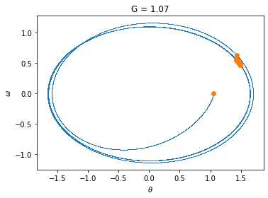

import numpy as np
import matplotlib.pyplot as plt
from mpl_toolkits.mplot3d import Axes3D
from scipy.signal import resample
#---------------------------------------------------------------------------------
def F1(theta,omega,tau):
return np.array([omega, -np.sin(theta) - gamma*omega + G*np.cos(Omega_d*tau)])
#---------------------------------------------------------------------------------
#---------------------------------------------------------------------------------
def pend_rk4(F,theta1,omega1,taufinal,dtau): #dimensionless solve
theta = []
omega = []
time = []
tau = 0.0
while tau < taufinal:
time.append(tau)
theta.append(theta1)
omega.append(omega1)
k1 = dtau*F(theta1,omega1,tau)
k2 = dtau*F(theta1 + 0.5*k1[0], omega1 + 0.5*k1[1], tau+dtau/2.)
k3 = dtau*F(theta1 + 0.5*k2[0], omega1 + 0.5*k2[1], tau+dtau/2.)
k4 = dtau*F(theta1 + k3[0], omega1 + k3[1], tau+dtau)
theta1 = theta1 + (k1[0] + 2*k2[0] + 2*k3[0] + k4[0])/6.
omega1 = omega1 + (k1[1] + 2*k2[1] + 2*k3[1] + k4[1])/6.
tau = tau+dtau
return np.asarray(theta),np.asarray(omega),np.asarray(time)
#---------------------------------------------------------------------------------
#--------------Initialize parameters----------------------------------------------
g_over_L = 1
t0 = 1/np.sqrt(g_over_L)
Q = 2
gamma = 1/Q
G = 1.2
omega_d = 0.667
Omega_d = omega_d*t0 #dimenionless frequency
T = 2*np.pi/Omega_d
dtau = 0.002
theta_0 = 20.0*np.pi/180.
omega_0 = 0.0
taufinal = 60*T
ncycle = (round(taufinal*Omega_d/(2*np.pi))) #sample phase space once per cycle.
#---------------rk4---------------------------------------------------------------
F = F1
[theta,omega,time] = pend_rk4(F,theta_0,omega_0,taufinal,dtau)
theta = (theta + np.pi)%(2*np.pi) - np.pi
nstep = int(len(time)/ncycle)
fig = plt.figure(3)
ax = fig.add_subplot(111)
ax.plot(theta,omega,'.',markersize=1.5, markeredgewidth=0)
ax.plot(theta[::nstep],omega[::nstep],'o')
ax.set_xlabel('$\\theta$')
ax.set_ylabel('$\omega$')
ax.set_aspect('equal')
plt.show()
plt.figure(4)
plt.plot(theta[::nstep],omega[::nstep],'o')
plt.xlabel('$\\theta$')
plt.ylabel('$\omega$')
plt.show()
#fig = plt.figure(5)
#ax = fig.add_subplot(111, projection='3d')
#ax.scatter(time[::nstep],theta[::nstep],omega[::nstep])
#ax.set_xlabel('time')
#ax.set_ylabel('theta')
#ax.set_zlabel('omega')Lab 6 [Solutions] - Damped and driven non-linear pendulum
- Most oscillatory motion in nature gradually decreases until the displacement becomes zero; such motion is said to be damped.
- Consider the mass on a spring when a horizontal drag force is included.
- For small velocities, assume that the drag force is proportional to velocity. The equation of motion can be written as
\[\begin{equation*} \frac{d^2 x}{dt^2} = -\omega_0^2 x - \gamma \frac{dx}{dt} \end{equation*}\] where the damping coefficient \(\gamma\) is a measure of the magnitude of the drag term. - Note that the drag term opposes the motion.
- In the linear case, the response of the damped harmonic oscillator to an external driving force is linear.
- If the magnitude of the external force is doubled, then the magnitude of the steady state motion is also doubled.
- What happens with a non-linear oscillator?
- Here we consider the non-linear pendulum with an external harmonic force and linear drag term.
- The equation of motion is
\[\begin{equation*} mL\frac{d^2 \theta}{dt^2} = -mg \sin \theta - \gamma \frac{d \theta}{dt} + F_D \cos(\omega_D t) \end{equation*}\] where \(\gamma\) is the friction (damping) parameter, \(F_D\) is the strength of the driving force divided by \(mL\), and \(\omega_D\) is the driving frequency.
- Convert to dimensionless DEQ.
\[\begin{equation*} \tau = t/t_0 \implies dt = t_0 d\tau \end{equation*}\]
\[\begin{equation*} \frac{mL}{t_0^2}\frac{d^2 \theta}{d\tau^2} = - mg \sin \theta - \frac{\gamma}{t_0} \frac{d \theta}{d\tau} + F_D \cos(\omega_D t_0 \tau) \end{equation*}\]
\[\begin{equation*} \frac{d^2 \theta}{d\tau^2} = - \frac{gt_0^2}{L} \sin \theta - \frac{\gamma t_0}{mL} \frac{d \theta}{d\tau} + \frac{F_D t_0^2}{mL} \cos(\omega_D t_0 \tau) \end{equation*}\] - Let \(t_0 = \sqrt{L/g} \implies F_D t_0^2/(mL) = F_D L/(mLg) = F_D/(mg) = G\). - Let $ q = t_0/mL.$ - Let \(\Omega_D = \omega_0 t_0\). So
\[\begin{equation*} \boxed{\frac{d^2 \theta}{d\tau^2} = - \sin \theta - q \frac{d \theta}{d\tau} + G \cos(\Omega_D \tau)} \end{equation*}\]
- We want to model this as a set of three coupled ODEs with \(\phi = \Omega_d \tau\).
\[\begin{align*} \frac{d \theta}{d\tau} &= \omega \\ \frac{d \omega}{d\tau} &= -\sin \theta - q \omega + G \cos(\phi)\\ \frac{d \phi}{d \tau} &= \Omega_D \end{align*}\]
- Chaotic behavior is the interplay between driving forces (i.e., \(\Omega_D\)) and the natural frequency (i.e., \(\sqrt{g/L}\)).
Exercise 1:
Write a python program to simulate a damped, driven pendulum using the 4th-order Runge-Kutta (rk4) method. The rk4 function should be written as generally as possible to handle the remaining exercises. You can define multiple functions and pass the name of the function to the rk4 solver. In this example, the function “F1” is being passed to the “pend_rk4” function.
F = F1
[theta,omega,time] = pend_rk4(F,theta_0,omega_0,taufinal,dtau)The (inadequately-commented) code included below will get you started.
Be prepared to plot the periodic angle \(\theta\) on the interval \(-\pi < \theta \le \pi\). A driven pendulum can make circular motions with \(|\theta|\) increasing to large values. It might be useful to consider the “mod” operator (%) and the np.where function.
Exercise 2:
Examine the case of zero damping, zero driving, and small angle. Here, \(q \rightarrow 0\), \(G \rightarrow 0\), \(\Omega_D \rightarrow 0\), and \(\sin \theta \rightarrow \theta\) such that \[\begin{eqnarray*} \frac{d \theta}{d \tau} &=& \omega\\ \frac{d \omega}{d \tau} & = & - \theta \end{eqnarray*}\] with analytical solutions \(\theta(\tau) = A \cos \tau\) and \(\omega(\tau) = - A \sin \tau\) where A is determined from initial conditions [\(\theta(\tau = 0)\)]. Plot the phase space trajectory (\(\omega\) vs. \(\theta\)) for several cycles. Is the area preserved properly? If not, experiment with the time step. We expect the area to be preserved for conservative systems.
#---------------------------------------------------------------------------------
def Fsmall(theta,omega,tau):
return np.array([omega, -theta - gamma*omega + G*np.cos(Omega_d*tau)])
#---------------------------------------------------------------------------------
G = 0
gamma = 0
dtau = 0.001
F = Fsmall
T = 2*np.pi/g_over_L
taufinal = 60*T
ncycle = (round(taufinal*g_over_L/(2*np.pi))) #sample phase space once per cycle.
[theta,omega,time] = pend_rk4(F,theta_0,omega_0,taufinal,dtau)
theta = (theta + np.pi)%(2*np.pi) - np.pi
nstep = int(len(time)/ncycle)
fig = plt.figure()
ax = fig.add_subplot(111)
ax.plot(theta,omega,'.',markersize=1.5, markeredgewidth=0)
ax.plot(theta[::nstep],omega[::nstep],'o')
ax.set_xlabel('$\\theta$')
ax.set_ylabel('$\omega$')
ax.set_aspect('equal')
plt.show()Exercise 3:
Now consider nonzero damping (e.g., \(q = 0.5\)), zero driving, and small angle. Here, \(G \rightarrow 0\) and \(\sin \theta \rightarrow \theta\). The solutions are \[\begin{eqnarray*} \frac{d \theta}{d \tau } &=& \omega \\ \frac{d \omega}{d \tau} & = & -q \omega - \theta. \end{eqnarray*}\] Plot the phase space trajectory. Is the phase space area preserved? This is a dispersive system now.
G = 0
gamma = 0.5
dtau = 0.002
F = Fsmall
[theta,omega,time] = pend_rk4(F,theta_0,omega_0,taufinal,dtau)
theta = (theta + np.pi)%(2*np.pi) - np.pi
nstep = int(len(time)/ncycle)
fig = plt.figure()
ax = fig.add_subplot(111)
ax.plot(theta,omega,'.',markersize=1.5, markeredgewidth=0)
ax.plot(theta[::nstep],omega[::nstep],'o')
ax.set_xlabel('$\\theta$')
ax.set_ylabel('$\omega$')
ax.set_aspect('equal')
plt.show()Exercise 4
Now consider the non-linear term for zero damping and zero driving, i.e., \(q \rightarrow 0\), \(G \rightarrow 0\), with equations \[\begin{eqnarray*} \frac{d \theta}{d \tau} &=& \omega \\ \frac{d \omega}{d \tau} &=& - \sin \theta. \end{eqnarray*}\] The phase space trajectories are \(\frac{1}{2} \omega^2 - \cos \theta = const\). Proof: \[\begin{eqnarray*} \frac{d \omega}{d \tau} &=& \frac{d \omega}{d \theta}\frac{d \theta}{d \tau} = - \sin \theta\\ & = & \omega \frac{d \omega}{d \theta} = - \sin \theta \\ & = & \frac{d}{d \theta} \left[ \frac{1}{2} \omega^2 \right] = \frac{d}{d\theta} [\cos \theta] \end{eqnarray*}\] Plot several phase space trajectories for different initial conditions.
G = 0
gamma = 0.0
dtau = 0.002
taufinal = 10*T
ncycle = (round(taufinal*g_over_L/(2*np.pi))) #sample phase space once per cycle.
F = F1
theta_0=np.array([10,30,60,90,120,150,179])*np.pi/180
fig = plt.figure()
ax = fig.add_subplot(111)
for i in range(len(theta_0)):
[theta,omega,time] = pend_rk4(F,theta_0[i],omega_0,taufinal,dtau)
theta = (theta + np.pi)%(2*np.pi) - np.pi
nstep = int(len(time)/ncycle)
ax.plot(theta,omega,'.',markersize=1.5, markeredgewidth=0)
ax.plot(theta[::nstep],omega[::nstep],'o')
ax.set_xlabel('$\\theta$')
ax.set_ylabel('$\omega$')
ax.set_aspect('equal')
plt.show()
#plot analytical trajectories
fig = plt.figure()
ax = fig.add_subplot(111)
k = np.cos(theta_0)
for i in range(len(k)):
theta = np.linspace(-np.pi,np.pi,500)
om2 = 2*(np.cos(theta) + k[i])
wh = np.where(om2 >=0)
omega = np.sqrt(om2[wh])
ax.plot(theta[wh],omega, 'r', theta[wh],-omega, 'r')
#ax.plot(theta[wh],-omega)
ax.set_xlabel('$\\theta$')
ax.set_ylabel('$\omega$')
ax.set_aspect('equal')
plt.show()Exercise 5
Repeat exercise 4 with nonzero damping (e.g., \(q = 0.5\)). Here the equations are \[\begin{eqnarray*} \frac{d \theta}{d \tau} &=& \omega \\ \frac{d \omega}{ d \tau} & = & - q \omega - \sin \theta \end{eqnarray*}\]
Experiment with different values of \(q\).
G = 0
gamma = 0.1
dtau = 0.02
F = F1
theta_0 = 60*np.pi/180
#theta_0=np.array([10,30,60,90,120,150,179])*np.pi/180
qarr = np.array([0,0.2,0.5,1.0])
for i in range(len(qarr)):
fig = plt.figure()
ax = fig.add_subplot(111)
gamma = qarr[i]
[theta,omega,time] = pend_rk4(F,theta_0,omega_0,taufinal,dtau)
theta = (theta + np.pi)%(2*np.pi) - np.pi
nstep = int(len(time)/ncycle)
ax.plot(theta,omega,'.',markersize=1.5, markeredgewidth=0)
ax.plot(theta[::nstep],omega[::nstep],'o')
ax.set_xlabel('$\\theta$')
ax.set_ylabel('$\omega$')
ax.set_aspect('equal')
ax.set_title('q = '+str(gamma))
plt.show()Exercise 6
Repeat exercise 4 with nonzero damping (e.g., \(q = 0.5\)), nonzero driving (e.g., \(G = 0.5\)), and small angle (mass on a spring). The equations are \[\begin{eqnarray*} \frac{d \theta}{d \tau} &=& \omega \\ \frac{d \omega}{d \tau} & = & -q \omega - \theta + G \sin \theta \\ \frac{ d \phi}{d \tau} & = & \Omega_D \end{eqnarray*}\]
Experiment with different values of \(q\) and \(G\).
gamma = 0.5
dtau = 0.002
F = Fsmall
theta_0 = 60*np.pi/180
Garr = np.array([0.5,0.9,1.07,1.35, 1.47, 1.5])
taufinal = 60*T
ncycle = (round(taufinal*Omega_d/(2*np.pi))) #sample phase space once per cycle.
for i in range(len(Garr)):
G = Garr[i]
fig = plt.figure()
ax = fig.add_subplot(111)
[theta,omega,time] = pend_rk4(F,theta_0,omega_0,taufinal,dtau)
theta = (theta + np.pi)%(2*np.pi) - np.pi
nstep = int(len(time)/ncycle)
ax.plot(theta,omega,'.',markersize=1.5, markeredgewidth=0)
ax.plot(theta[::nstep],omega[::nstep],'o')
ax.set_xlabel('$\\theta$')
ax.set_ylabel('$\omega$')
ax.set_aspect('equal')
ax.set_title('G = ' + str(G))
plt.show()

Exercise 7
Finally, investigate the damped, sinusoidally-driven pendulum. Make two plots for each case: 1) phase space and 2) a stroboscopic phase space. Generally, the steady solution settles with a period equal to \(\Omega_D\). You will want to sample the results with the \(\Omega_D\) frequency. This corresponds to times \[\begin{equation*} t = \frac{2 \pi}{\Omega_D} n \end{equation*}\] where \(n\) is the number of completed cycles. For well-behaved systems, this reduces the phase space plot to a single point: the value of (\(\theta, \omega\)) that is repeated at each cycle. Chaotic system behave differently, but surprisingly the points gather on preferred points, or strange attractors.
Run the program for the following parameters (\(q = 0.5\)): \(G = [0.5, 0.9, 1.07, 1.15, 1.35, 1.47, 1.5]\). Finally, try G = 1.5 for different values of \(q\).
gamma = 0.5
dtau = 0.002
taufinal = 20*T
ncycle = (round(taufinal*Omega_d/(2*np.pi))) #sample phase space once per cycle.
F = F1
theta_0= 20*np.pi/180
Garr = np.array([0.5,0.9,1.07,1.35, 1.47, 1.5])
for i in range(len(Garr)):
G = Garr[i]
fig = plt.figure()
ax = fig.add_subplot(111)
[theta,omega,time] = pend_rk4(F,theta_0,omega_0,taufinal,dtau)
theta = (theta + np.pi)%(2*np.pi) - np.pi
nstep = int(len(time)/ncycle)
ax.plot(theta,omega,'.',markersize=1.5, markeredgewidth=0)
ax.plot(theta[::nstep],omega[::nstep],'o')
ax.set_xlabel('$\\theta$')
ax.set_ylabel('$\omega$')
#ax.set_aspect('equal')
plt.show()
Exercise 8 (optional)
Time permitting, attempt to make a bifurcation diagram. Determine the steady state periods (can be multiple periods) vs. G. Try running for \(0.9 < G < 1.2\).
G0 = 0.9
G1 = 1.2
dG = 0.0001
Garr = np.arange(G0,G1,dG)
dtau = 0.002
taufinal = 20*T
plt.figure(6)
Garray = []
Tarr=[]
F = F1
for i in range(len(Garr)):
print(i,len(Garr))
G = Garr[i]
[theta,omega,time] = pend_rk4(F,theta_0,omega_0,taufinal,dtau)
theta = (theta + np.pi)%(2*np.pi) - np.pi
t = time[::nstep]
th = theta[::nstep]
for j in range(4):
Garray.append(Garr[i])
Tarr.append(th[-5+j])
#print(G,th)
plt.plot(Garray,Tarr,'.',markersize=1)
plt.xlabel('G')
plt.ylabel('$\\theta$')
#plt.savefig('bifurcation.pdf')0 3000
1 3000
2 3000
3 3000
4 3000
5 3000
6 3000
7 3000
8 3000
9 3000
10 3000
11 3000
12 3000
13 3000
14 3000
15 3000
16 3000
17 3000
18 3000
19 3000
20 3000
21 3000
22 3000
23 3000
24 3000
25 3000
26 3000
27 3000
28 3000
29 3000
30 3000
31 3000
32 3000
33 3000
34 3000
35 3000
36 3000
37 3000
38 3000
39 3000
40 3000
41 3000
42 3000
43 3000
44 3000
45 3000
46 3000
47 3000
48 3000
49 3000
50 3000
51 3000
52 3000
53 3000
54 3000
55 3000
56 3000
57 3000
58 3000
59 3000
60 3000
61 3000
62 3000
63 3000
64 3000
65 3000
66 3000
67 3000
68 3000
69 3000
70 3000
71 3000
72 3000
73 3000
74 3000
75 3000
76 3000
77 3000
78 3000
79 3000
80 3000
81 3000
82 3000
83 3000
84 3000
85 3000
86 3000
87 3000
88 3000
89 3000
90 3000
91 3000
92 3000
93 3000
94 3000
95 3000
96 3000
97 3000
98 3000
99 3000
100 3000
101 3000
102 3000
103 3000
104 3000
105 3000
106 3000
107 3000
108 3000
109 3000
110 3000
111 3000
112 3000
113 3000
114 3000
115 3000
116 3000
117 3000
118 3000
119 3000
120 3000
121 3000
122 3000
123 3000
124 3000
125 3000
126 3000
127 3000
128 3000
129 3000
130 3000
131 3000
132 3000
133 3000
134 3000
135 3000
136 3000
137 3000
138 3000
139 3000
140 3000
141 3000
142 3000
143 3000
144 3000
145 3000
146 3000
147 3000
148 3000
149 3000
150 3000
151 3000
152 3000
153 3000
154 3000
155 3000
156 3000
157 3000
158 3000
159 3000
160 3000
161 3000
162 3000
163 3000
164 3000
165 3000
166 3000
167 3000
168 3000
169 3000
170 3000
171 3000
172 3000
173 3000
174 3000
175 3000
176 3000
177 3000
178 3000
179 3000
180 3000
181 3000
182 3000
183 3000
184 3000
185 3000
186 3000
187 3000
188 3000
189 3000
190 3000
191 3000
192 3000
193 3000
194 3000
195 3000
196 3000
197 3000
198 3000
199 3000
200 3000
201 3000
202 3000
203 3000
204 3000
205 3000
206 3000
207 3000
208 3000
209 3000
210 3000
211 3000
212 3000
213 3000
214 3000
215 3000
216 3000
217 3000
218 3000
219 3000
220 3000
221 3000
222 3000
223 3000
224 3000
225 3000
226 3000
227 3000
228 3000
229 3000
230 3000
231 3000
232 3000
233 3000
234 3000
235 3000
236 3000
237 3000
238 3000
239 3000
240 3000
241 3000
242 3000
243 3000
244 3000
245 3000
246 3000
247 3000
248 3000
249 3000
250 3000
251 3000
252 3000
253 3000
254 3000
255 3000
256 3000
257 3000
258 3000
259 3000
260 3000
261 3000
262 3000
263 3000
264 3000
265 3000
266 3000
267 3000
268 3000
269 3000
270 3000
271 3000
272 3000
273 3000
274 3000
275 3000
276 3000
277 3000
278 3000
279 3000
280 3000
281 3000
282 3000
283 3000
284 3000
285 3000
286 3000
287 3000
288 3000
289 3000
290 3000
291 3000
292 3000
293 3000
294 3000
295 3000
296 3000
297 3000
298 3000
299 3000
300 3000
301 3000
302 3000
303 3000
304 3000
305 3000
306 3000
307 3000
308 3000
309 3000
310 3000
311 3000
312 3000
313 3000
314 3000
315 3000
316 3000
317 3000
318 3000
319 3000
320 3000
321 3000
322 3000
323 3000
324 3000
325 3000
326 3000
327 3000
328 3000
329 3000
330 3000
331 3000
332 3000
333 3000
334 3000
335 3000
336 3000
337 3000
338 3000
339 3000
340 3000
341 3000
342 3000
343 3000
344 3000
345 3000
346 3000
347 3000
348 3000
349 3000
350 3000
351 3000
352 3000
353 3000
354 3000
355 3000
356 3000
357 3000
358 3000
359 3000
360 3000
361 3000
362 3000
363 3000
364 3000
365 3000
366 3000
367 3000
368 3000
369 3000
370 3000
371 3000
372 3000
373 3000
374 3000
375 3000
376 3000
377 3000
378 3000
379 3000
380 3000
381 3000
382 3000
383 3000
384 3000
385 3000
386 3000
387 3000
388 3000
389 3000
390 3000
391 3000
392 3000
393 3000
394 3000
395 3000
396 3000
397 3000
398 3000
399 3000
400 3000
401 3000
402 3000
403 3000
404 3000
405 3000
406 3000
407 3000
408 3000
409 3000
410 3000
411 3000
412 3000
413 3000
414 3000
415 3000
416 3000
417 3000
418 3000
419 3000
420 3000
421 3000
422 3000
423 3000
424 3000
425 3000
426 3000
427 3000
428 3000
429 3000
430 3000
431 3000
432 3000
433 3000
434 3000
435 3000
436 3000
437 3000
438 3000
439 3000
440 3000
441 3000
442 3000
443 3000
444 3000
445 3000
446 3000
447 3000
448 3000
449 3000
450 3000
451 3000
452 3000
453 3000
454 3000
455 3000
456 3000
457 3000
458 3000
459 3000
460 3000
461 3000
462 3000
463 3000
464 3000
465 3000
466 3000
467 3000
468 3000
469 3000
470 3000
471 3000
472 3000
473 3000
474 3000
475 3000
476 3000
477 3000
478 3000
479 3000
480 3000
481 3000
482 3000
483 3000
484 3000
485 3000
486 3000
487 3000
488 3000
489 3000
490 3000
491 3000
492 3000
493 3000
494 3000
495 3000
496 3000
497 3000
498 3000
499 3000
500 3000
501 3000
502 3000
503 3000
504 3000
505 3000
506 3000
507 3000
508 3000
509 3000
510 3000
511 3000
512 3000
513 3000
514 3000
515 3000
516 3000
517 3000
518 3000
519 3000
520 3000
521 3000
522 3000
523 3000
524 3000
525 3000
526 3000
527 3000
528 3000
529 3000
530 3000
531 3000
532 3000
533 3000
534 3000
535 3000
536 3000
537 3000
538 3000
539 3000
540 3000
541 3000
542 3000
543 3000
544 3000
545 3000
546 3000
547 3000
548 3000
549 3000
550 3000
551 3000
552 3000
553 3000
554 3000
555 3000
556 3000
557 3000
558 3000
559 3000
560 3000
561 3000
562 3000
563 3000
564 3000
565 3000
566 3000
567 3000
568 3000
569 3000
570 3000
571 3000
572 3000
573 3000
574 3000
575 3000
576 3000
577 3000
578 3000
579 3000
580 3000
581 3000
582 3000
583 3000
584 3000
585 3000
586 3000
587 3000
588 3000
589 3000
590 3000
591 3000
592 3000
593 3000
594 3000
595 3000
596 3000
597 3000
598 3000
599 3000
600 3000
601 3000
602 3000
603 3000
604 3000
605 3000
606 3000
607 3000
608 3000
609 3000
610 3000
611 3000
612 3000
613 3000
614 3000
615 3000
616 3000
617 3000
618 3000
619 3000
620 3000
621 3000
622 3000
623 3000
624 3000
625 3000
626 3000
627 3000
628 3000
629 3000
630 3000
631 3000
632 3000
633 3000
634 3000
635 3000
636 3000
637 3000
638 3000
639 3000
640 3000
641 3000
642 3000
643 3000
644 3000
645 3000
646 3000
647 3000
648 3000
649 3000
650 3000
651 3000
652 3000
653 3000
654 3000
655 3000
656 3000
657 3000
658 3000
659 3000
660 3000
661 3000
662 3000
663 3000
664 3000
665 3000
666 3000
667 3000
668 3000
669 3000
670 3000
671 3000
672 3000
673 3000
674 3000
675 3000
676 3000
677 3000
678 3000
679 3000
680 3000
681 3000
682 3000
683 3000
684 3000
685 3000
686 3000
687 3000
688 3000
689 3000
690 3000
691 3000
692 3000
693 3000
694 3000
695 3000
696 3000
697 3000
698 3000
699 3000
700 3000
701 3000
702 3000
703 3000
704 3000
705 3000
706 3000
707 3000
708 3000
709 3000
710 3000
711 3000
712 3000
713 3000
714 3000
715 3000
716 3000
717 3000
718 3000
719 3000
720 3000
721 3000
722 3000
723 3000
724 3000
725 3000
726 3000
727 3000
728 3000
729 3000
730 3000
731 3000
732 3000
733 3000
734 3000
735 3000
736 3000
737 3000
738 3000
739 3000
740 3000
741 3000
742 3000
743 3000
744 3000
745 3000
746 3000
747 3000
748 3000
749 3000
750 3000
751 3000
752 3000
753 3000
754 3000
755 3000
756 3000
757 3000
758 3000
759 3000
760 3000
761 3000
762 3000
763 3000
764 3000
765 3000
766 3000
767 3000
768 3000
769 3000
770 3000
771 3000
772 3000
773 3000
774 3000
775 3000
776 3000
777 3000
778 3000
779 3000
780 3000
781 3000
782 3000
783 3000
784 3000
785 3000
786 3000
787 3000
788 3000
789 3000
790 3000
791 3000
792 3000
793 3000
794 3000
795 3000
796 3000
797 3000
798 3000
799 3000
800 3000
801 3000
802 3000
803 3000
804 3000
805 3000
806 3000
807 3000
808 3000
809 3000
810 3000
811 3000
812 3000
813 3000
814 3000
815 3000
816 3000
817 3000
818 3000
819 3000
820 3000
821 3000
822 3000
823 3000
824 3000
825 3000
826 3000
827 3000
828 3000
829 3000
830 3000
831 3000
832 3000
833 3000
834 3000
835 3000
836 3000
837 3000
838 3000
839 3000
840 3000
841 3000
842 3000
843 3000
844 3000
845 3000
846 3000
847 3000
848 3000
849 3000
850 3000
851 3000
852 3000
853 3000
854 3000
855 3000
856 3000
857 3000
858 3000
859 3000
860 3000
861 3000
862 3000
863 3000
864 3000
865 3000
866 3000
867 3000
868 3000
869 3000
870 3000
871 3000
872 3000
873 3000
874 3000
875 3000
876 3000
877 3000
878 3000
879 3000
880 3000
881 3000
882 3000
883 3000
884 3000
885 3000
886 3000
887 3000
888 3000
889 3000
890 3000
891 3000
892 3000
893 3000
894 3000
895 3000
896 3000
897 3000
898 3000
899 3000
900 3000
901 3000
902 3000
903 3000
904 3000
905 3000
906 3000
907 3000
908 3000
909 3000
910 3000
911 3000
912 3000
913 3000
914 3000
915 3000
916 3000
917 3000
918 3000
919 3000
920 3000
921 3000
922 3000
923 3000
924 3000
925 3000
926 3000
927 3000
928 3000
929 3000
930 3000
931 3000
932 3000
933 3000
934 3000
935 3000
936 3000
937 3000
938 3000
939 3000
940 3000
941 3000
942 3000
943 3000
944 3000
945 3000
946 3000
947 3000
948 3000
949 3000
950 3000
951 3000
952 3000
953 3000
954 3000
955 3000
956 3000
957 3000
958 3000
959 3000
960 3000
961 3000
962 3000
963 3000
964 3000
965 3000
966 3000
967 3000
968 3000
969 3000
970 3000
971 3000
972 3000
973 3000
974 3000
975 3000
976 3000
977 3000
978 3000
979 3000
980 3000
981 3000
982 3000
983 3000
984 3000
985 3000
986 3000
987 3000
988 3000
989 3000
990 3000
991 3000
992 3000
993 3000
994 3000
995 3000
996 3000
997 3000
998 3000
999 3000
1000 3000
1001 3000
1002 3000
1003 3000
1004 3000
1005 3000
1006 3000
1007 3000
1008 3000
1009 3000
1010 3000
1011 3000
1012 3000
1013 3000
1014 3000
1015 3000
1016 3000
1017 3000
1018 3000
1019 3000
1020 3000
1021 3000
1022 3000
1023 3000
1024 3000
1025 3000
1026 3000
1027 3000
1028 3000
1029 3000
1030 3000
1031 3000
1032 3000
1033 3000
1034 3000
1035 3000
1036 3000
1037 3000
1038 3000
1039 3000
1040 3000
1041 3000
1042 3000
1043 3000
1044 3000
1045 3000
1046 3000
1047 3000
1048 3000
1049 3000
1050 3000
1051 3000
1052 3000
1053 3000
1054 3000
1055 3000
1056 3000
1057 3000
1058 3000
1059 3000
1060 3000
1061 3000
1062 3000
1063 3000
1064 3000
1065 3000
1066 3000
1067 3000
1068 3000
1069 3000
1070 3000
1071 3000
1072 3000
1073 3000
1074 3000
1075 3000
1076 3000
1077 3000
1078 3000
1079 3000
1080 3000
1081 3000
1082 3000
1083 3000
1084 3000
1085 3000KeyboardInterrupt: ignored<Figure size 432x288 with 0 Axes>